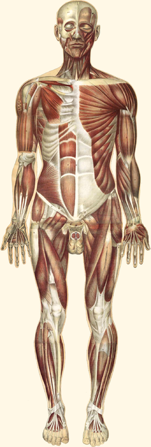

IL SISTEMA MUSCOLARE
Il sistema muscolare è l'insieme degli organi che permettono, attraverso la contrazione muscolare, il movimento del soggetto e lo scorrimento di sostanze all'interno degli organi, come sangue e cibo. Inoltre insieme al sistema scheletrico costituisce l'apparato locomotore. La contrazione avviene nel momento in cui le fibre di cui è costituito il muscolo, in seguito ad uno stimolo nervoso, scorrono le une sulle altre generando una forza che attraverso il tendine si trasmette alla leva ossea, permettendo così il movimento del corpo o di una sua parte.
Nei vertebrati il sistema muscolare è costituito da due tipologie principali di muscoli:
- I muscoli volontari (difficile da valutare il numero esatto: dai 400 ai circa 600), formati da tessuto muscolare striato permettono il movimento del soggetto. Sono legati alle ossa tramite tendini e vengono spesso indicati anche come muscoli scheletrici.
- I muscoli involontari, che sono invece di natura liscia. Vengono detti anche muscoli viscerali perché si trovano a ricoprire gran parte delle pareti degli organi interni, come nel tratto digestivo, nella vescica, nei dotti, nelle arterie, nelle vene, ecc. Fa eccezione il muscolo cardiaco (detto anche miocardio), anch'esso involontario ma formato da tessuto muscolare striato; è innervato dal sistema nervoso autonomo.
Dal punto di vista della funzione motoria è possibile distinguere muscoli deputati alla statica, in particolare i muscoli della parte posteriore del corpo, e deputati alla dinamica, rappresentati grossomodo dai muscoli della parte anteriore.Ogni muscolo contiene al suo interno , mescolate fra loro differenti fibre muscolari , fibre tipo 1 lente denominate anche rosse e fibre tipo 2 veloci denominate anche bianche o pallide le fibre lente si contraggono lentamente ma hanno una buona resistenza alla fatica,quelle veloci hanno una contrazione rapida ma sono più affaticabili nei muscoli di velocisti saltatori e lanciatori vi é una percentuale elevata di fibre veloci in quelle maratoneti e ciclisti prevalgono invece le fibre lente .
Il tessuto muscolare è composto da una pluralità di fibre raggruppate in fasci. Le fibre muscolari possiedono delle strutture chiamate miofibrille, che si trovano in parallelo lungo l'asse maggiore della cellula e occupano quasi l'intera massa cellulare. Le miofibrille delle fibre muscolari lisce sono apparentemente omogenee, ma possiedono bande scure e chiare alternate, a causa della distribuzione dei componenti principali delle miofibrille, le proteine actina e miosina.
